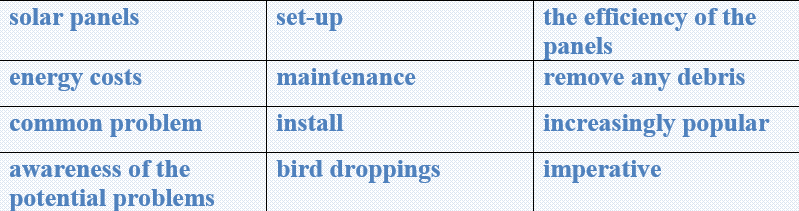

The ability to heat and cool is one important accomplishment of modern technology. Our ovens, freezers, and homes can be kept at any temperature we choose, a luxury that wasn't possible 100 years ago. However, keeping our homes comfortable uses a lot of energy.
Lightingis essential to a modern society. Lights have revolutionized the way we live, work, and play. Many homes have the traditional incandescent bulbsthat were first invented by Thomas Edison. These bulbs convert only about 10% of the electricity they use into light; the other 90% is converted into heat.
Many factors affect the amount of energy a household uses. A number of factors affect the amount of energy an individual household uses, including:
🔸 Geographiclocationandclimate
🔸 Type of home and its physicalcharacteristics
🔸 Number, type, and efficiency of energy-consuming devices in the home and the amount of time they are used
🔸 Numberofhouseholdmembers
Because of both population shifts to warmer climates and the availability of air conditioning in almost all new homes, air conditioning has been one of the fastest growing energy uses in homes.
Task1. Vocabulary and grammar
Match the adjectives with the suitable nouns.
o warmer characteristics
o geographic bulbs
o physical devices
o energy-consuming uses
o modern location
o comfortable climates
o individual technology
o incandescent household
Task2Vocabulary
Find the words from the text with the same meaning with the given definitions
🔸An enclosed compartment, usually part of a cooker, for cooking and heating food.
🔸A refrigerated cabinet or room for preserving food at very low temperatures
🔸A state of great comfort or elegance, especially when involving great expense.
🔸Equipment in a room, building, or street for producing light.
🔸A light bulb dangled from the ceiling
🔸The quality of being hot; high temperature.
🔸The particular place or position.
🔸A house and its occupants regarded as a unit.
🔸A thing made or adapted for a particular purpose, especially a piece of mechanical or electronic equipment.
🔸Something that has been achieved successfully
🔸A circumstance, fact, or influence that contributes to a result.
Lesson3 Read the text and answer the questions
How do we use energy in homes?
What do you think have revolutionized the way we live, work and play?
Who invented traditional incandescent bulbs?
What percent of electricity do the bulbs use into lights?
What is the other percent of electricity converted into?
What factors can affect the amount of energy an individual household uses?
Lesson4 Listening
Listen to a conversation. Choose the correct answers.
1. The man/woman is on business.
2. The woman’s name is Caroline Maziq/Masid.
3. They are at a meeting/hotel.
4. The woman has not got her laptop/mobile phone.
5. The time is 9.30/10.00
Task 5 Writing
✔️ Learn the given lexical units.
✔️ Work in groups and explain the meanings of the given lexical units.
✔️ Try to use them in sentences.

Read the case and give some solutions
Solar panels are becoming increasingly popular as a way to save on energy costs, but there are a few common problems that can occur.
You are a homeowner with solar panels. Awareness of the potential problems with their set-up and maintenance is imperative. The solar panels you installed were covered with mud, dirt, and debris. There are lots of bird droppings and pollen that have accumulated on the panels. As a result, the efficiency of the panels has been reduced.
Suggest efficient ways to remove any debris that built up on the surface.
What is the problem?
How serious is this situation?
What is the cause of this problem?
How it is successfully solved?
How should it be solved?
What is the best way to clean solar panels?
Can you present some tips on how to clean solar panels?